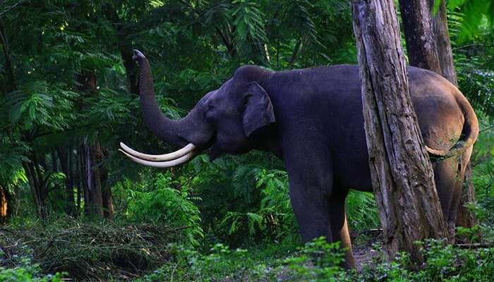

Places to visit in Wayanad

Wayanad is a district in the north-eastern part of God’s own country, Kerala. The place is situated on the southern tip of the Deccan Plateau, glorified by the Western Ghats with lofty ridges and clear lakes. The dense forests, lush green jungles, Wayanad tourist places and deep valleys are a must for any traveler. The setting seems just like those seemingly enticing landscapes that you have once seen in your fantasy. It is one of those cities in Kerala where sightseeing is just not enough. Get a hang of soothing Ayurvedic massage when in Wayanad and pull up your pants to attempt the most amazing treks.
- Meenmutty Waterfalls
- Chembra Peak
- Banasura Sagar Dam
- Muthanga Wildlife Sanctuary 
- Edakkal Caves

Meenmutty derives its name from ‘Meen’ that means fish and ‘Muty’ that means blocked which means blocking the fishes. One of the most splendid Wayanad tourist places, this is amongst the best waterfalls in Kerala. It is located on the Ooty road at a height of 300 meters and, if in Kalpetta then this Wayanad destination is just 29 kilometers. If you are looking for the best waterfalls in Kerala then this should not be missed from your travel list.
Location: Kallar Meenmutty Falls Road, Kallar, Kerala 695551

The Chembra peak is the highest peak in Wayanad and is located at a height of 2100 meters above the sea level. It is the best tourist place for nature lovers to adore its beauty and offers bewildering treks for adventurous souls. The peak is visible from almost all parts of Wayanad and the major attraction is the natural heart-shaped lake atop the hill. You can take a glimpse of Kozhikode, Nilgiris and Malappuram districts from here. This unique lake makes Chembra Peak one of the best tourist places in Wayanad
Location: Chembra, Kerala
This dam is one of the most visited tourist places in Wayanad with pictures. The second largest of its kind in entire Asia, Banasura Dam is a distinguished place to visit in Wayanad. It is located amidst the Western Ghats at a distance of about 21 Kilometers from Kalpetta. One of the serene wonders of nature’s work can be found in the picturesque view of mountain folds that lies in the backdrop of the dam, situated at the foothills of Banasura.
Location: Wayanad, Kerala, India
Muthanga Wildlife Sanctuary is rich in biodiversity and is an integral part of Nilgiri Biosphere Reserve. The Sanctuary has larger population of pachyderms which is why it has been declared as a Project Elephant Site. The elephants and deers roam around freely while you can spot tigers sometimes. There are various species of monkeys, birds, butterflies and insects also. A long drive along the roadside of Muthanga enables you to watch all these animals.
Location: National Highway 212, Muthanga, Kerala 673592

For the best Wayanad sightseeing, head to the famous Edakkal Caves. Edakkal Rock engraving are invaluable treasures of the world heritage. The site combines the spectacular vistas of nature and the timeless appeal of the nearby prehistoric caves. Human figures depicted in different styles are the most beautiful items among the carving. It is considered to be the best Wayanad attraction for the artwork of carving it offers.
Location:Nenmeni, Kerala 673595